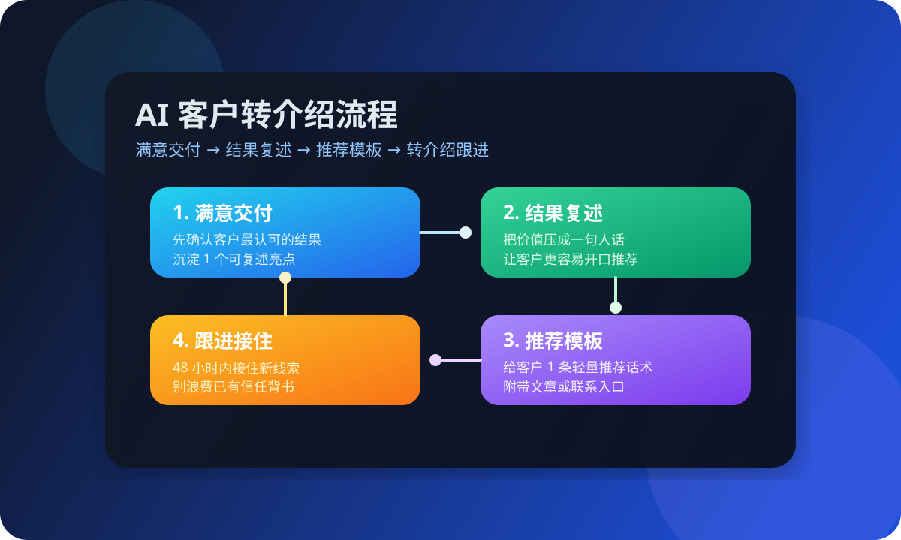

这篇先解决什么
先解决“客户满意但不推荐”“推荐全靠临场发挥”“转介绍来了也没人跟”“只会说帮我介绍一下”这些更真实的问题，再谈更复杂的返佣、积分或裂变系统。
很多人搜“客户转介绍怎么做”“AI 客户转介绍”“口碑营销怎么做”，真实卡点往往不是不会发优惠券，而是客户虽然满意，却没有一个自然、清楚、低负担的推荐动作。对一人公司来说，AI 客户转介绍真正值钱的地方，不是做复杂裂变，而是把“做出结果 → 帮客户说清结果 → 给一个可复制推荐入口 → 及时跟进”这条线跑顺，让老客户自然带来下一位客户。

先解决“客户满意但不推荐”“推荐全靠临场发挥”“转介绍来了也没人跟”“只会说帮我介绍一下”这些更真实的问题，再谈更复杂的返佣、积分或裂变系统。
Harris 的关键词策略强调：先研究用户会怎么搜，再决定哪一页承接。放到客户转介绍上也是一样。很多人搜“客户转介绍怎么做”，真实问题不是缺系统，而是老客户虽然认可你，但没有一个简单、自然、低打扰的推荐路径。HubSpot 在 customer referral program 的公开资料里提到，转介绍本质上是把满意客户变成品牌倡导者，口碑推荐会带来更高信任度，也更容易产生持续增长。MBA 智库关于口碑营销的解释也提醒了一点：传播之所以发生，不只是因为你请求了推荐，而是因为产品和服务本身有价值、容易被复述、值得被分享。对一人公司来说，这意味着客户转介绍最该先做的，不是设计复杂返利，而是先把“结果是什么、适合谁、怎么介绍”这三件事讲清楚。客户越容易复述，推荐动作越容易发生。
重点不是“裂变规模”，而是先让客户愿意自然开口、你也接得住。
客户推荐你，通常不是因为你做了很多，而是因为他清楚感受到其中 1 个结果。可能是咨询更顺了，可能是内容更好发了，也可能是官网线索更好接了。对一人公司来说，最实用的动作不是写一堆案例，而是每次交付后都确认“你觉得哪一点最值钱”。这个答案就是之后做转介绍的原材料。没有这个结果锚点，客户即便满意，也很难准确向别人描述你到底帮了什么。
HubSpot 的转介绍逻辑和口碑营销的共同点，都不是让客户背很多信息，而是让他在转述时没有负担。比如，你不要给客户一段很长的介绍，而是帮他收成一句话：“他们是帮一人公司把内容、咨询和交付接顺的。”或者“他们擅长把官网咨询承接和 AI 内容生产接成一套。”一句话清楚，比十段介绍更容易被转发。AI 在这里的作用很直接：把客户反馈、交付结果和案例摘要整理成更容易复述的版本。
很多推荐失败，不是客户不愿意帮，而是你给他的动作太重。更适合一人公司的做法，是只给 1 个很轻的动作：转发一篇文章、转一段短介绍、拉一个微信、引导对方先看某篇 FAQ 或方案页。动作越轻，客户越容易做。MBA 智库在口碑营销里提到，传播建立在价值与体验之上，传播路径越顺，口碑越容易发生。所以不要一上来要求客户写长评价、录视频、发朋友圈。先从 1 个最容易完成的小动作开始。
客户把人介绍过来只是开始，真正决定能不能接住的是后面的入口设计。你至少要准备 1 个适合第一次了解的人看的页面，比如一篇“怎么开始”的文章；再准备 1 个适合问题较明确的人看的 FAQ 或解决方案页；最后保留 1 个真实联系入口，比如微信、电话或预约咨询。这样客户推荐来的朋友不会掉进空白页，也不会一上来就被迫沟通。先自我阅读、再继续咨询，会更自然。
转介绍最大的浪费，不是没有人介绍，而是有人介绍后没有被及时接住。推荐关系本身带着信任，如果 24 到 48 小时内没有回应，这份信任会快速衰减。对一人公司来说，最简单的动作就是把“转介绍线索”单独标记，优先确认对方从哪里来、当前卡什么、适合先看哪篇、要不要直接约沟通。AI 可以在这里做提醒、归档和推荐下一步内容，但真正的关键仍然是你要在合适时间跟上。
不是先做复杂系统，而是先把“结果、话术、入口、跟进”这 4 个点补齐。
把交付结果、客户反馈和案例亮点整理成一句更容易复述的话。
根据不同客户类型生成 1 对 1 更贴近场景的推荐文案。
根据推荐对象当前阶段，自动推荐更合适的文章、FAQ 或解决方案页。
把 24 小时和 48 小时两个关键动作固定下来，避免有人介绍却没人接。
每月复盘哪类客户最愿意推荐、哪种入口最容易接住、哪一步最容易断掉。
如果你还没把成交后的留存动作跑顺，建议先看这篇。
如果你想先把线索跟进和咨询推进接起来，可以继续看这篇。
如果你想把内容、咨询、留存和转介绍接成一套闭环，可以直接沟通现状。
如果你现在也在做官网咨询、客户留存或老客户复购，可以把现状发来，我们先帮你拆成最小可执行的转介绍清单。